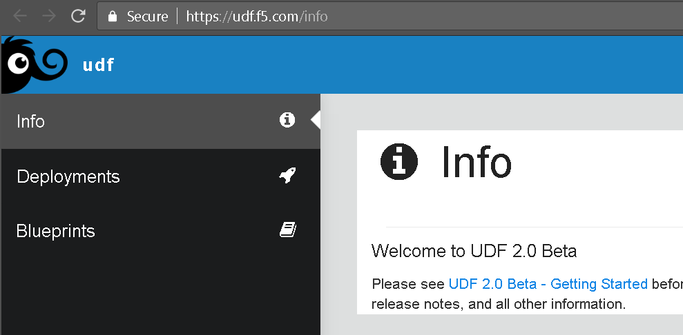
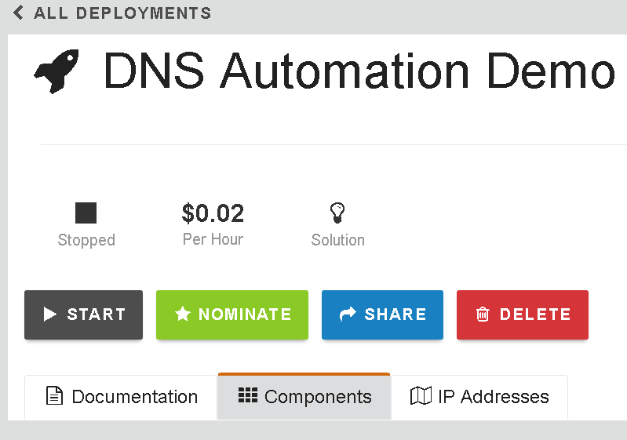
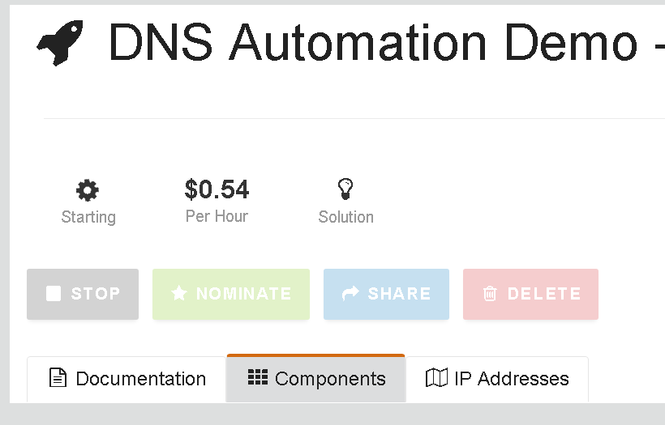
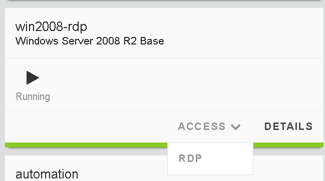
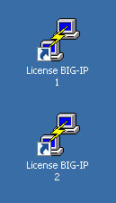
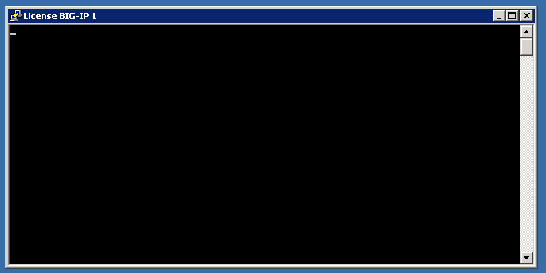
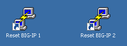

Connecting to UDF 2.0¶
This lab goes through the process of launching the demo environment, connecting via Windows RDP, and licensing/resetting the BIG-IP devices.
Launching Deployment¶
From https://federate.f5.com find the “UDF” link and click on it.
{kind=link}
You should see the main UDF page. Click on the “Blueprints” link.
{kind=link}
Find the “DNS Automation Demo” Blueprint and click on “Deploy”

You will see “Deploy From Blueprint” and click “Deploy” again.

You should now see the “DNS Automation Demo” screen that has the “Start” button listed.
Click on “Start”.
{kind=link}
The Deployment is now starting.
{kind=link}
Connecting with Windows RDP¶
Once the Deployment is finished starting click on the “Components” tab to get a view like the following.

Find the win2008-rdp component and click on the “Access” button to display the “RDP” link.
{kind=link}
Download/launch the RDP link.
The username is “Administrator” and the password can be found under the “Details” page of the win2008-rdp component. Note: copy/paste of the password into the RDP session does not work. You can copy the password, open the RDP session settings in your RPD clinet and paste the password there. Save it and open the RDP session. You should see a desktop that looks like the following.

Licensing/Resetting BIG-IP¶
When a UDF Deployment is started you will need to re-license the device. There are links on the Desktop to expedite this process.
First find the “License” links.
{kind=link}
Double-click on both of these and you should see a window appear briefly like the following.
{kind=link}
Next find the “Resetting” links.
{kind=link}
Double-click on both of these and you should see a window appear briefly like the following.

You are now ready to start the next Lab: Creating BIG-IP DNS Sync Group